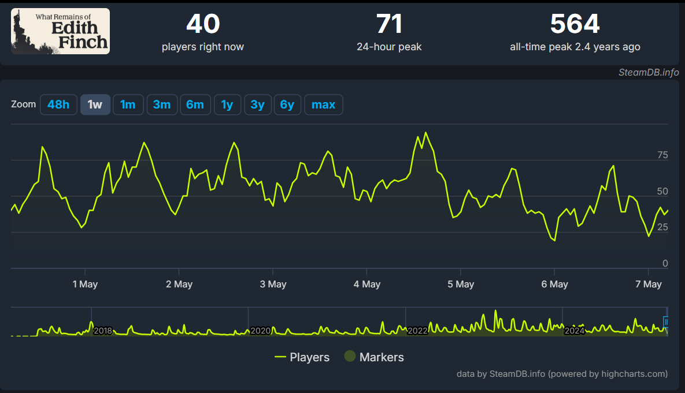

What remains of Edith Finch has a lot of statics and fun facts to follow and find out, so this is just a page thet summerises some general information about the game!
Finance
A total of $11.5m was made as gross revenue, exceeding the average $100, 000 made by indie developers.
With over 938k units sold at it's current price of $19.99
Time
5.3 hours of average playtime with
2.3 hours median playtime

Players
Total Global players: 1.5million
Total Followers: 105.9k
564 players was the all time hight in 2022 (3.3 years ago)
WROEF has a small yet dedicated fanbase, brought to popularity through gameplay and lore content creators. Fans share a shared appreciation of this beautifully crafted game and story.